인터넷정보관리사-2급 (2020-06-13 기출문제)
1과목: 인터넷의 이해
1. IPv6의 특징에 대한 설명으로 잘못된 것은?
- 주소 할당 방식은 클래스 단위의 비순차적 할당을 한다.
- 헤더 크기는 가변적이다.
- 128비트 주소길이를 갖는다.
- 품질 관리를 위해 QoS를 제공한다.
(정답률: 60%)

2. 다음 중 인터넷의 기술 발전 순서상 가장 늦게 개발된 것은?
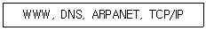
- WWW
- TCP/IP
- DNS
- ARPANET
(정답률: 79%)
3. 다음은 인터넷의 역사에 대한 설명이다. 괄호 안에 알맞은 용어가 순서대로 짝지어진 것은?
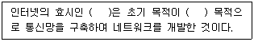
- INTERNET, 상업
- ARPANET, 국방
- ARPANET, 상업
- INTERNET, 국방
(정답률: 82%)
4. 다음에서 설명하고 있는 IPv4의 클래스는 무엇인가?
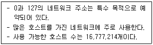
- A 클래스
- B 클래스
- C 클래스
- D 클래스
(정답률: 70%)
5. 다음 중 IPv6 주소로 할당되는 유형이 아닌 것은?
- 애니캐스트 주소
- 멀티캐스트 주소
- 유니캐스트 주소
- 브로드캐스트 주소
(정답률: 68%)
6. 다음 중 국가별 도메인의 이름이 잘못 연결된 것은?
- 한국 - kr
- 영국 - en
- 프랑스 - fr
- 중국 - cn
(정답률: 76%)
7. 다음 중 전자우편 프로토콜에 대한 설명으로 잘못된 것은?
- SMTP는 25번 포트를 이용하여 메일 서버와 클라이언트에서 메일을 교환한다.
- IMAP은 999번 포트를 이용하는 수신 담당 비표준 프로토콜이다.
- POP3는 110번 포트를 통해 수신된 메일을 사용자 컴퓨터로 가져오는 프로토콜이다.
- MIME는 텍스트 외에 멀티미디어 기능을 지원하는 프로토콜이다.
(정답률: 70%)
8. 다음에서 설명하고 있는 전자상거래 관련 용어는 무엇인가?
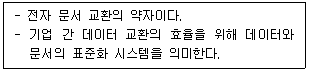
- CALS
- IDC
- EDI
- CRM
(정답률: 61%)
9. 다음 중 HTTP 프로토콜의 잘 알려진(Well-Known) 포트 번호는 무엇인가?
- 80
- 21
- 25
- 110
(정답률: 76%)
10. 다음 중 소셜 미디어의 사용 목적이 아닌 것은?
- 타인의 의견을 확인하기 위해서이다.
- 새로운 대중에게 새로운 뉴스를 제공하기 위해서 이다.
- 자신의 존재를 감추고 타인의 의견을 확인하기 위해서이다.
- 뉴스에 의견을 덧붙여 토론을 시도하기 위해서이다.
(정답률: 74%)
11. 다음 중 클라우드 컴퓨팅에 대한 설명으로 잘못된 것은?
- 초기 구입 비용과 비용 지출이 많으나 컴퓨터 가용률이 높다.
- 서버가 공격당하면 개인 정보가 유출될 수 있다.
- 웹 혹은 프로그램 기반의 통제 인터페이스를 제공한다.
- 컴퓨터 시스템의 유지보수 비용을 줄일 수 있다.
(정답률: 58%)
12. 클라우드 컴퓨팅 서비스 유형 중 응용 프로그램 솔루션을 제공하는 서비스는 무엇인가?
- IaaS
- PaaS
- SaaS
- NaaS
(정답률: 57%)
13. 다음 중 클라우드 컴퓨팅 기술 중 전산자원에 대한 사용량 수집을 통해 과금 체계를 정립하기 위한 기술은 무엇인가?
- 자원 유틸리티
- 보안 및 프라이버시
- 가상화 기술
- 서비스 수준 관리
(정답률: 64%)
14. 다음 중 인터넷상의 수많은 정보 가운데 사용자가 원하는 정보만 서비스 해주는 맞춤형 뉴스 서비스를 의미하는 용어의 약자는?
- RSS
- C2C
- USN
- SLA
(정답률: 63%)
15. 정보를 전송하는 방식에 따라 푸시(Push)와 풀(Pull)로 구분할 수 있는데, 다음 중 푸시 서비스와 거리가 먼 것은?
- 인터넷 쇼핑
- 클라우드
- 페이스북
- 인터넷 신문
(정답률: 47%)
16. 다음 중 실세계에 3차원 가상 물체를 겹쳐서 보여주는 기술을 무엇이라 하는가?
- 증강현실
- 가상현실
- 모바일 가상화
- 위젯
(정답률: 75%)
17. 다음에서 설명하고 있는 용어는 무엇인가?
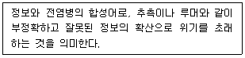
- 인포러스트
- 스패밍
- 네카시즘
- 인포데믹스
(정답률: 68%)
18. 저작권법의 보호기간에 대한 설명으로 잘못된 것은?
- 저작인접권은 방송의 경우 50년간 존속한다.
- 저작재산권은 보호기간의 원칙에 따라 저작권자가 생존하는 동안만 70년간 존속된다.
- 업무상 저작물의 저작재산권은 창작한때부터 50년 이내에 공표되지 아니한 경우 창작한때부터 70년간 존속한다.
- DB제작자의 권리는 DB의 제작을 완료한 때부터 발생하며, 그 다음해부터 기산하여 5년간 존속한다.
(정답률: 64%)
19. 다음 중 저작권법에서 저작물 등의 원본 또는 그 복제물을 공중에게 대가를 받거나 받지 아니하고 양도 또는 대여하는 것을 의미하는 용어는?
- 발행
- 배포
- 공표
- 중개
(정답률: 70%)
20. 다음 중 저작권법에서 저작재산권의 종류에 해당하지 않는 것은?
- 배포권
- 복제권
- 공연권
- 공표권
(정답률: 47%)
21. 다음 중 보호받는 저작물만으로 구성한 것은?
- 글, 노래, 편곡
- 사진, 법률, 지도
- 신문, 잡지, 훈령
- 법률, 헌법, 조례
(정답률: 72%)
22. 다음에서 설명하고 있는 개인정보의 유형은 무엇인가?
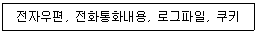
- 일반정보
- 통신정보
- 법적정보
- 조직정보
(정답률: 72%)
23. 다음 중 개인 정보 유출 통지 및 신고제도 위반에 대한 처벌조항은?
- 위반시 3년 이하 징역
- 위반시 5천만원 이하 과태료
- 위반시 3천만원 이하 과태료
- 위반시 5년 이하 징역
(정답률: 53%)
24. 다음 중 주기억장치와 데이터를 직접적으로 상호 교환하지 않는 장치는 무엇인가?
- 제어장치
- 입력장치
- 연산장치
- 보조기억장치
(정답률: 56%)
25. 컴퓨터 시스템의 성능을 높이기 위해 2대 이상의 CPU를 이용하여 2개 이상의 작업을 동시에 병렬로 처리하는 방식을 무엇이라 하는가?
- 분산처리
- 일괄처리
- 시분할처리
- 다중처리
(정답률: 56%)
26. 중앙처리장치의 처리속도와 주기억장치의 접근속도 차이를 줄이기 위해 사용하는 고속 버퍼메모리로서 컴퓨터의 처리속도를 향상시키기 위한 고속 기억장치를 무엇이라 하는가?
- 플래시 메모리
- 캐시 메모리
- 블루레이
- 패치
(정답률: 63%)
27. 다음 중 장치의 특성이 다른 하나는 무엇인가?
- 블루레이
- 스캐너
- 디지타이저
- 터치패드
(정답률: 58%)
28. 다음 네트워크 기술에 대한 설명 중 잘못된 것은?
- T3 전용회선의 최대 전송속도는 45Mbps이다.
- ISDN의 D채널은 64Kbps로 사용자 정보 전송에 사용된다.
- RADSL은 자동 적응형 디지털 가입자 회선이다.
- VPN은 인터넷과 같은 공중망을 사용하여 사설망을 구축하는 기술이다.
(정답률: 44%)
29. 다음에서 설명하고 있는 네트워크 장비는 무엇인가?
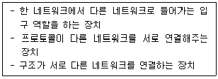
- 허브
- 브리지
- 게이트웨이
- 라우터
(정답률: 57%)
30. 다음 중 전용회선의 최대 전송속도가 가장 빠른 것은?
- T1
- T2
- T3
- E1
(정답률: 54%)
31. 다음 중 가정이나 소규모 사무실에서 인터넷과 같은 통신 네트워크를 이용해 운영하는 사업 형태를 의미하는 용어는 무엇인가?
- OTP
- 웹로그(Weblog)
- 미디어랩(Media Rep)
- 소호(SOHO)
(정답률: 58%)
32. 다음 중 특수 기호 관련 태그의 표현이 잘못된 것은?
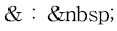
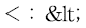
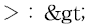
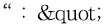
(정답률: 48%)
33. 다음 중 URL에 대한 설명으로 잘못된 것은?
- HTTP는 80번 포트를 사용하여 URL을 표현할 때는 생략 가능하다.
- 메일 프로토콜에는 mailto://를 사용한다.
- 정보 위치를 표시하기 위해 사용하는 주소이다.
- 프로토콜, 호스트주소, 디렉토리로 구성된다.
(정답률: 56%)
2과목: 인터넷 자원 탐색
34. 웹 브라우저에 대한 설명으로 옳은 것을 고른 것은?
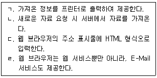
- ㄱ, ㄴ
- ㄱ, ㄷ
- ㄴ, ㄹ
- ㄷ, ㄹ
(정답률: 45%)
35. 다음은 어떤 브라우저에 대한 소개글이다. 이 브라우저의 명칭은?
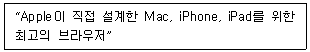
- 사파리(Safari)
- 오페라(Opera)
- 아이튠즈(iTunes)
- 넷스케이프(Netscape)
(정답률: 56%)
36. 다음 중 텍스트 기반의 웹 브라우저는?
- 아라크네
- 구글 크롬
- 모질라 파이어폭스
- 인터넷 익스플로러
(정답률: 55%)
37. 네이버 웨일의 '스페이스' 설정 방법에 해당하는 것만을 고른 것은?
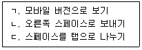
- ㄴ
- ㄱ, ㄷ
- ㄴ, ㄷ
- ㄱ, ㄴ, ㄷ
(정답률: 39%)
38. 인터넷 익스플로러의 기능에 해당하지 않는 것은?
- 자주 방문하는 사이트를 등록할 수 있다.
- 웹 페이지를 작성하고 디버그하기 위한 도구를 제공한다.
- 피싱 방지 도구가 있어 개인 정보 유출을 예방할 수 있다.
- 웹 페이지 화면을 직접지정 또는 영역을 선택하여 캡처할 수 있다.
(정답률: 45%)
39. '윈도우 10'의 기본 웹 브라우저는?
- 오페라
- 구글 크롬
- 모질라 파이어폭스
- 마이크로소프트 엣지
(정답률: 65%)
40. 다음 사례에 적절한 구글 크롬 브라우저 메뉴는?
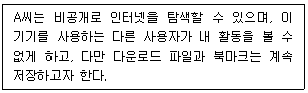
- 새 탭
- 새 창
- 새 시크릿 창
- InPrivate 브라우징
(정답률: 53%)
41. 모질라 파이어폭스의 '향상된 추적 방지 기능'의 대상만을 모두 고른 것은?
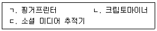
- ㄷ
- ㄱ, ㄷ
- ㄴ, ㄷ
- ㄱ, ㄴ, ㄷ
(정답률: 29%)
42. 구글 크롬의 '방문 기록'메뉴와 유사한 기능을 하는 인터넷 익스플로러의 메뉴는?
- 다운로드 보기
- 마지막 검색 세션 다시 열기
- InPrivate 브라우징
- 호환성 보기 설정
(정답률: 55%)
43. 인터넷 익스플로러에서 마이크로소프트 엣지로 열기 위한 단축키는?
- Ctrl + Shift + E
- Ctrl + Shift + P
- Ctrl + Shift + U
- Ctrl + Shift + Del
(정답률: 59%)
44. 구글 크롬에서 '고급' 설정 메뉴에 해당하는 것을 고른 것은?
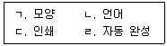
- ㄱ, ㄴ
- ㄱ, ㄹ
- ㄴ, ㄷ
- ㄷ, ㄹ
(정답률: 35%)
45. 인터넷 익스플로러의 인터넷 옵션 창에서 색과 언어를 설정할 수 있는 탭은?
- 내용
- 보안
- 연결
- 일반
(정답률: 53%)
46. 로봇 배제 표준에 대한 설명으로 옳은 것은?
- 검색 조건 표시에 특정한 규칙은 없다.
- 최소한 한 개의 Disallow 필드가 있어야 한다.
- 정보 검색의 질을 높이는 것을 목적으로 한다.
- 로봇의 접근을 허용하여 서버의 부담을 줄이는 것이다.
(정답률: 39%)
47. 구글 검색과 네이버의 검색이 서로 다른 이유로 가장 적절한 것은?
- 검색 속도 차이 때문이다.
- 둘 다 메타 검색엔진이기 때문이다.
- 검색엔진의 데이터베이스의 양이 동일하기 때문이다.
- 로봇의 사이트 방문에 대한 다른 전략을 갖고 있기 때문이다.
(정답률: 59%)
48. 검색 엔진에 대한 설명으로 옳지 않은 것은?
- 검색 속도가 빨라야 한다.
- 데이터베이스는 많을수록 좋다.
- DB의 업데이트 주기는 길수록 좋다.
- 정보에 대한 안내자의 역할을 해 준다.
(정답률: 59%)
49. 매뉴얼 인덱스 방식에 대한 옳은 설명만을 모두 고른 것은?
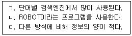
- ㄷ
- ㄱ, ㄴ
- ㄱ, ㄷ
- ㄱ, ㄴ, ㄷ
(정답률: 23%)
50. 하이브리드 검색엔진에 대한 설명으로 옳은 것은?
- 자체 데이터베이스가 없다.
- 멀티스레드 검색엔진이라고도 한다.
- 로봇에 의해 구축된 정보만을 대상으로 한다.
- 사람의 판단에 의한 고급 정보를 검색할 수 있다.
(정답률: 43%)
51. 메타 검색엔진에 대한 설명으로 옳은 것은?
- 리키지(Leakage) 발생 가능성이 높다.
- 여러 개의 검색엔진을 동시에 활용할 수 있다.
- 타 검색엔진에 비해 검색 속도가 매우 빠르다.
- ROBOT을 활용하여 데이터베이스를 구축한다.
(정답률: 37%)
52. 다음 사례에서의 재현율은?
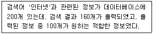
- 50%
- 62.5%
- 80%
- 82.5%
(정답률: 51%)
53. 다음 설명에 해당하는 정보 검색 관련 용어는?
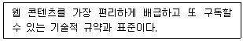
- CPC
- RSS
- 소셜 북마크
- 옐로우 페이지
(정답률: 41%)
54. 다음 행위를 지칭하는 용어는?
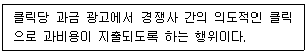
- 과다클릭
- 부정클릭
- 차등가격
- 참여확대
(정답률: 51%)
55. 다음 설명과 관련 있는 네이버 서비스는?
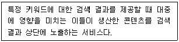
- 밴드
- Keep
- 네이버 포스트
- 인플루언서 검색
(정답률: 51%)
56. 다음(Daum)과 태터툴즈(Tattertools)가 제휴 개발한 개방형 블로그 서비스는?
- 카페
- 아지트
- 티스토리
- 카카오 스토리
(정답률: 49%)
57. 줌(zum)에서 제공하는 블로그 서비스는?
- 밴드
- 카페
- 허브줌
- 이글루스
(정답률: 43%)
58. 정보검색의 3단계 발전 모델에 해당하는 것만을 고른 것은?
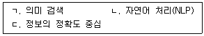
- ㄱ
- ㄱ, ㄴ
- ㄴ, ㄷ
- ㄱ, ㄴ, ㄷ
(정답률: 37%)
59. 다음 사례에서 알 수 있는 정보를 지칭하는 용어는?
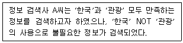
- 가비지(Garbage)
- 리키지(Leakage)
- 불용어(Stop Word)
- 시소러스(Thesaurus)
(정답률: 45%)
60. 트윗 삭제에 대해 옳은 설명만을 고른 것은?
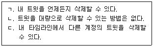
- ㄱ
- ㄱ, ㄴ
- ㄴ, ㄷ
- ㄱ, ㄴ, ㄷ
(정답률: 47%)
61. 비공식 사이트에 대한 설명으로 옳은 것은?
- 블로그나 미니홈피 등을 말한다.
- 공신력 있는 정보를 바탕으로 제공한다.
- 정부기관에서 운영하는 웹 사이트를 말한다.
- www.president.go.kr은 비공식 사이트이다.
(정답률: 56%)
62. 인터넷 검색엔진을 통해 검색할 수 있는 정보 영역만을 고른 것은?
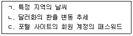
- ㄷ
- ㄱ, ㄴ
- ㄴ, ㄷ
- ㄱ, ㄴ, ㄷ
(정답률: 61%)
63. 다음 중 정보검색에 대한 설명으로 옳은 것은?
- 정보검색과 저작권은 관련이 거의 없다.
- 비공개 정보를 대상으로 정보를 수집한다.
- 사용자가 원하는 정보를 찾아주는 프로세스이다.
- 불필요한 정보를 정확히 폐기하는 것을 목적으로 한다.
(정답률: 56%)
64. 다음 중 정보 검색을 잘하기 위한 기본 원칙에 해당하는 것은?
- 검색엔진은 인터넷상의 모든 정보를 찾는다.
- 가능한 많은 리키지가 발생할수록 효율적이다.
- 검색 정보에 대한 출처와 사용 권한을 주의한다.
- 검색 대상에 대한 기초 지식은 검색과 관련이 없다.
(정답률: 54%)
65. 다음 중 검색 엔진의 색인 작업에 해당하는 것은?
- 소팅
- 링크 추출
- 병렬 처리
- 온라인 색인
(정답률: 44%)
66. 정보검색에서 사용되는 언어가 가지는 특성만을 고른 것은?
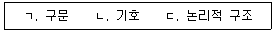
- ㄱ
- ㄱ, ㄷ
- ㄴ, ㄷ
- ㄱ, ㄴ, ㄷ
(정답률: 33%)
3과목: 인터넷 윤리
67. 다음 내용에 해당되는 인터넷 역기능의 유형은?
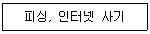
- 인터넷 테러
- 일반범죄
- 인격침해
- 유해정보
(정답률: 53%)
68. 다음에서 리차드 루빈이 제시한 정보통신기술의 유혹 요인에 해당하는 것만을 모두 고른 것은?
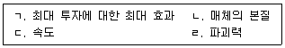
- ㄱ, ㄴ
- ㄴ, ㄹ
- ㄱ, ㄷ, ㄹ
- ㄴ, ㄷ, ㄹ
(정답률: 39%)
69. 다음과 같은 네티켓 핵심 원칙 10가지를 제시한 사람은?
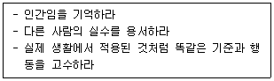
- 버지니아 셰어
- 리코나
- 리차드 루빈
- 스피넬로
(정답률: 41%)
70. 다음 중 공개자료실 네티켓에 대한 설명으로 잘못된 것은?
- 음란물은 올리지 않는다.
- 용량이 큰 파일은 분할하여 올린다.
- 사람들이 잘 찾을 수 있도록 같은 자료를 여러 번 올린다.
- 저작권을 침해할 소지가 있는 상업용 소프트웨어는 올리지 않는다.
(정답률: 67%)
71. 다음 설명에서 괄호 안에 들어갈 가장 적절한 내용을 순서대로 나열한 것은?
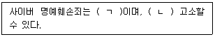
- ㄱ. 반의사불벌죄, ㄴ. 피해자가
- ㄱ. 반의사불벌죄, ㄴ. 피해자가 아닌 제3자도
- ㄱ. 비친고죄, ㄴ. 피해자가
- ㄱ. 비친고죄, ㄴ. 피해자가 아닌 제3자도
(정답률: 44%)
72. 다음 수신자가 발신자에게 수신 거부 의사를 밝혀야만 E-mail 발송이 금지되는 방식을 뜻하는 용어는?
- 옵트인
- 옵트아웃
- 임시조치 제도
- 에스크로 제도
(정답률: 46%)
73. 다음 중 피싱 사기를 예방하는 방법으로 가장 거리가 먼 것은?
- 사기성 이벤트에 개인정보를 제공하지 않는다.
- 백신프로그램을 설치하고 실시간 구동한다.
- 금융 사이트는 즐겨찾기보다 인터넷 주소를 직접 입력하여 접속한다.
- 보안 강화를 명목으로 금융정보를 요구하는 경우에만 금융정보를 알려준다.
(정답률: 60%)
74. 다음 중 전자상거래 보호제도가 아닌 것은?
- 공제계약
- 에스크로 제도
- 채무지급 보증계약
- 정보통신망법 임시조치 제도
(정답률: 29%)
75. 다음 인터넷 중독의 원인 중 사이버 공간의 특성과 가장 거리가 먼 것은?
- 새로운 자아의 구현
- 높은 사회 불안
- 현실 도피
- 통제감
(정답률: 24%)
76. 다음 인터넷 중독 과정 중 제일 첫 번째 단계에서 나타나는 증상은?
- 사회적 사건의 주인공이 된다.
- 익명성은 음란성과 결합되어 더욱 발휘된다.
- 현실에 없는 즐거움을 인터넷에서 만끽한다.
- 정기적으로 접속하면서 친구들과 정보를 교류한다.
(정답률: 34%)
77. 다음 설명에서 괄호 안에 들어갈 가장 적절한 내용을 순서대로 나열한 것은?
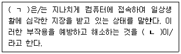
- ㄱ. 인터넷 증후군, ㄴ. 인터넷 디톡스
- ㄱ. 웨바홀리즘, ㄴ. 인터넷 증후군
- ㄱ. 인터넷 디톡스, ㄴ. 인터넷 중독
- ㄱ. 인터넷 중독, ㄴ. 웨바홀리즘
(정답률: 49%)
78. 다음 중 CSG에 대한 설명으로 옳지 않은 것은?
- 게임행동 종합진단 척도이다.
- 인터넷 중독 정도를 진단할 수 있다.
- 한국콘텐츠진흥원에서 개발한 척도이다.
- 검사 대상자가 응답한 내용으로 진단하는 자가 진단 프로그램이다.
(정답률: 32%)
79. 다음 중 인터넷 게임 중독을 예방하기 위한 방법으로 옳지 않은 것은?
- 인터넷게임 사용일지를 작성한다.
- 게임을 우선 먼저 한 후 해야 할 일을 한다.
- 온라인 게임 외에 다양한 대안활동을 모색한다.
- 게임시간 조절이 어려우면 전문상담기관의 도움을 받는다.
(정답률: 62%)
80. 다음 중 인터넷 중독 중증 치료 시 치료 과정에서 제일 마지막에 하는 것은?
- 협조의뢰
- 상황파악
- 현상파악
- 허비한 시간 검토
(정답률: 47%)